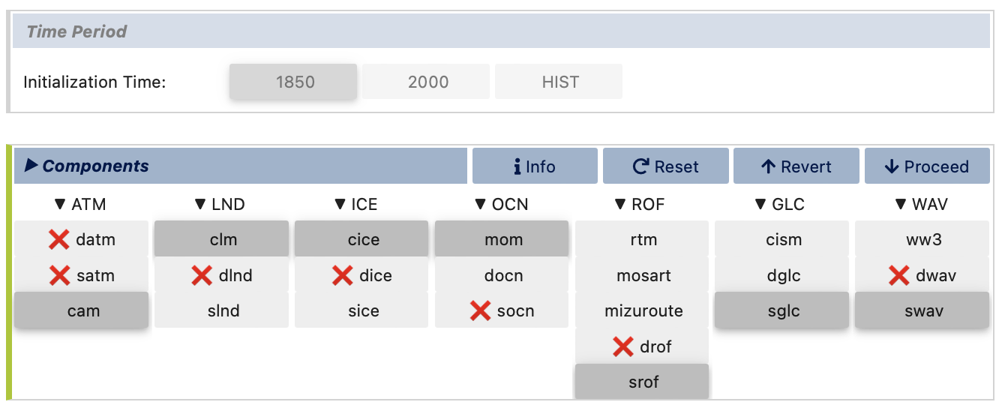

Ridge World
This example provides step-by-step guidance on how to generate a coupled idealized configuration that consists of an aquaplanet with land caps at the pole and a narrow land ridge extending between the two poles, similar to the configuration used in Wu et al (2021) . In the example given below, the visualCaseGen GUI is used to guide users through choosing their CESM components, setting up all the ocean input files, setting up all the land input files, and finally setting up and configuring their case.
Here we are not running a standard case with CESM. We are modifying the configuration substantially by changing the ocean grid, ocean bathymetry, continental geometry and land surface properties, so you should select “Custom” here.
Stage 0: Open visualCaseGen
Follow the instructions in the Opening the GUI to open visualCaseGen in your Jupyter notebook environment.
Stage 1: Select Compset
After having executed the cell with the command from visualCaseGen import gui; gui, and clicking the Start button, you will see the main interface of visualCaseGen.
Click the Custom button to proceed with creating a custom compset for our idealized Ridge World configuration.

Initialization time
Once the Custom button is clicked, you will be prompted to select the initialization time. For this example, we will select 1850` as the initialization time.

Models
Once you’ve selected the initialization time, visualCaseGen will prompt you to select the models for each component class. In this ridge world case we select the following component options: cam as the atmosphere; clm` as the land component; cice` as the ice component; mom` as the ocean component, srof` (i.e., stub run off) as the river component; sglc` (i.e., stub land ice) as the land ice component; and, swav (i.e. stub wave) as the wave component. After all the selections are made, the model matrix should look like:
Model Physics
Having selected the models, you will proceed to select the physics options for each. The physics settings determine the complexity of each model component and impact computational requirements. For this example, we will select the following physics options which are based on the selections made in Wu et al (2021) :

Component Options (Modifiers)
We are now ready to finalize the compset by selecting optional physics modifiers. For this example, we will select (none) for all the components except for the clm component where we will select the satellite phenology (SP) mode for the land which means that aspects of the land model such as leaf-area index are prescribed as opposed to being prognosed interactively by the land biogeochemistry.

Stage 2: Grid
Having completed the compset configuration, you will now proceed to the Grid stage …
Further instructions will be added as the example is developed…